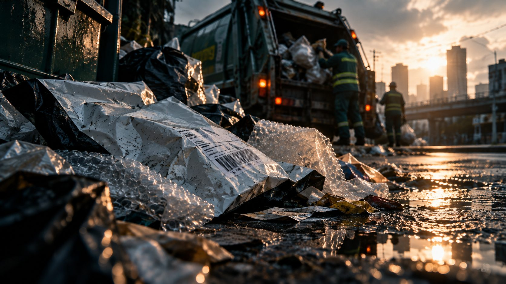

Milestone 2 · What To Do?
The laws exist.
But What Works, What Falls Short, What’s Next?
Five measures address plastic packaging in the Philippines. None of the laws among them was written for e-commerce.
AI-generated illustration, not a real photo.
Overview
Five measures already operate in the Philippines.
Each was assessed on two questions: does it work, and will it last?
Existing rules address plastic in general, so they reach e-commerce plastic packaging only after it is discarded, if at all. Meanwhile, the platform sets the packing rules for each order.
Key terms and labels
Terms and evidence labels used in Milestone 2.
- EPR (Extended Producer Responsibility)
- A rule that makes the company selling a product responsible for recovering its packaging after use. In the Philippines: Republic Act No. 11898 (RA 11898) (2022).
- MRF (materials recovery facility)
- A barangay or city site where recyclables are sorted from other waste, required by Republic Act No. 9003 (RA 9003).
- Co-processing
- Burning plastic as fuel in cement kilns. Under RA 11898 it counts as “recovery,” the same as recycling.
- LGU (local government unit)
- A city, municipality or barangay government.
- Relevance (to e-commerce packaging)
- Whether a measure addresses e-commerce packaging directly (it names mailers, bubble wrap or online-order packaging) or only indirectly (as part of all plastic or all waste).
- Effective / sustainable
- Effective: a measured change against a baseline. Sustainable: backed by law and funding, and likely to last.
Evidence labels
- AuditedChecked by an independent auditor or a government audit.
- ReportedPublished by a government office or news outlet; the raw data could not be checked.
- Self-reportedComes from the company or program itself.
- ProjectedA plan, goal or estimate, not a result.
- Not disclosedSearched for and not made public.
- Not foundNo published figure was found.
- No baselineNo before-and-after figure exists to measure change against.
- Our mathComputed by Isang Parcel; the working is on Sources MS2.
Coverage along the route
Most measures apply after the online order is opened.
Dark stations have a measure in place; dashed stations have none. Beyond the drain, only general cleanups remain.
- 1Add to cartPlatform programs
- 2SellerEPR Act
- 3DeliveryNo measure
- 4UnboxingQC Trash to Cashback
- 5Trash canRA 9003 + MRFs
- 6DrainCity ordinances
- 7RiverCleanups only
- 8SeaCleanups only
- 9FishNo measure
- 10Our plateNo measure
Station numbers follow Follow the Parcel in Milestone 1. “Cleanups only” refers to programs that collect all waste from waterways; none targets e-commerce plastic packaging.
Does any of the five measures address e-commerce packaging?
Existing solutions →